Herramientas del trazado
Haga clic en el botón en la barra de herramientas del mapa y aparecerá la herramienta de trazado que se muestra en la tabla a continuación.
en la barra de herramientas del mapa y aparecerá la herramienta de trazado que se muestra en la tabla a continuación.
Table 7 Instrucción de herramienta de trazado
|
Icono
|
Función
|
Instrucción de operación
|
| 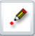 |
Añadir un punto
|
Haga clic en el botón 〖〗 aparezca la ventana “Agregar texto”. Ingrese contenidos y haga clic en“Agregar texto”. Haga clic con el botón izquierdo del mouse en el mapa y aparezca un punto nombrado por la entrada en la posición de clic.
Pueda configurar el tamaño y el color del punto haciendo doble clic en el punto trazado en el GIS.
|
| 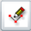 |
Agregar una línea quebrada
|
Haga clic en el botón 〖〗, mantenga presionado el botón izquierdo del mouse en el mapa, arrastre el mouse para trazar una línea en el mapa GIS. Suelte
el mouse, haga clic para confirmar el punto de inflexión y haga doble clic para detenerlo. Pueda establecer el ancho y el
color de la línea haciendo doble clic en la línea trazada en el GIS.
|
| 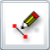 |
Agregar segmento de línea
|
Haga clic en el botón 〖〗, mantenga presionado el botón izquierdo del mouse en el mapa, arrastre el mouse para trazar una línea en el mapa GIS y suelte
el mouse para detenerse. Pueda establecer el ancho y el color de la línea haciendo doble clic en la línea trazada en el GIS.
|
| 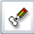 |
Agregar polígono
|
Haga clic en el botón 〖〗, mantenga presionado el botón izquierdo del mouse en el mapa, arrastre el mouse y suelte el mouse. Haga clic con el botón
izquierdo del mouse para seleccionar el punto medio y haga doble clic para detenerlo. Así que trace un polígono en el mapa
GIS, haga doble clic en el polígono para establecer el color y la transparencia del polígono.
|
| 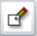 |
Agregar rectángulo
|
Haga clic en el botón 〖〗, mantenga presionado el botón izquierdo del mouse en el mapa, arrastre el mouse, suelte el mouse, así que trace un rectángulo
en el mapa. Haga doble clic en el rectángulo para establecer el color y la transparencia del rectángulo.
|
| 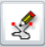 |
Agregar línea liberalmente
|
Haga clic en el botón 〖〗, mantenga presionado el botón izquierdo del mouse en el mapa, trace libremente, suelte el mouse y trace libremente las líneas
en el mapa. Haga doble clic en la línea para establecer el color y el ancho de la línea.
|
| 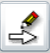 |
Agregar flecha
|
Haga clic en el botón 〖〗, mantenga presionado el botón izquierdo del mouse en el mapa, arrastre el mouse, suelte el mouse, así que trace una flecha
en el mapa. Haga doble clic en la flecha para establecer el color y la transparencia.
|
| 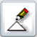 |
Agregar triángulo
|
Haga clic en el botón 〖〗, mantenga presionado el botón izquierdo del mouse en el mapa, arrastre el mouse, suelte el mouse, así que trace un triángulo
en el mapa. Haga doble clic en el triángulo para establecer el color y la transparencia.
|
| 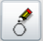 |
Agrega círculo
|
Haga clic en el botón 〖〗, mantenga presionado el botón izquierdo del mouse en el mapa, arrastre el mouse, suelte el mouse, así que trace un círculo
en el mapa. Haga doble clic en el círculo para establecer el color y la transparencia.
|
| 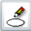 |
Agregar elipse
|
Haga clic en el botón 〖〗, mantenga presionado el botón izquierdo del mouse en el mapa, arrastre el mouse, suelte el mouse, así que trace un elipse
en el mapa. Haga doble clic en el elipse para establecer el color y la transparencia.
|
| 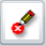 |
Borrar gráfico
|
Haga clic en el botón 〖〗 para borrar todas los trazados en el mapa GIS.
|